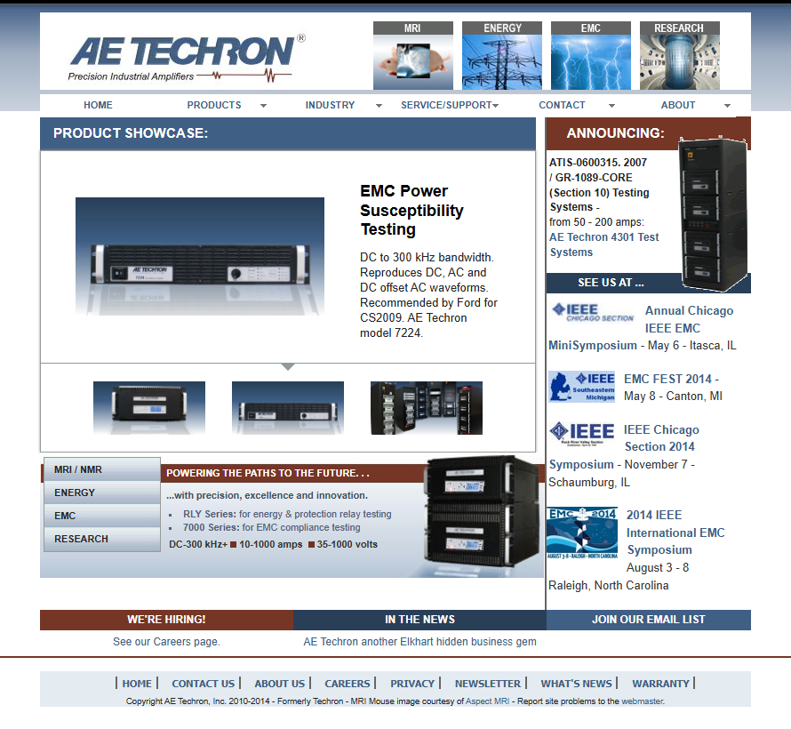
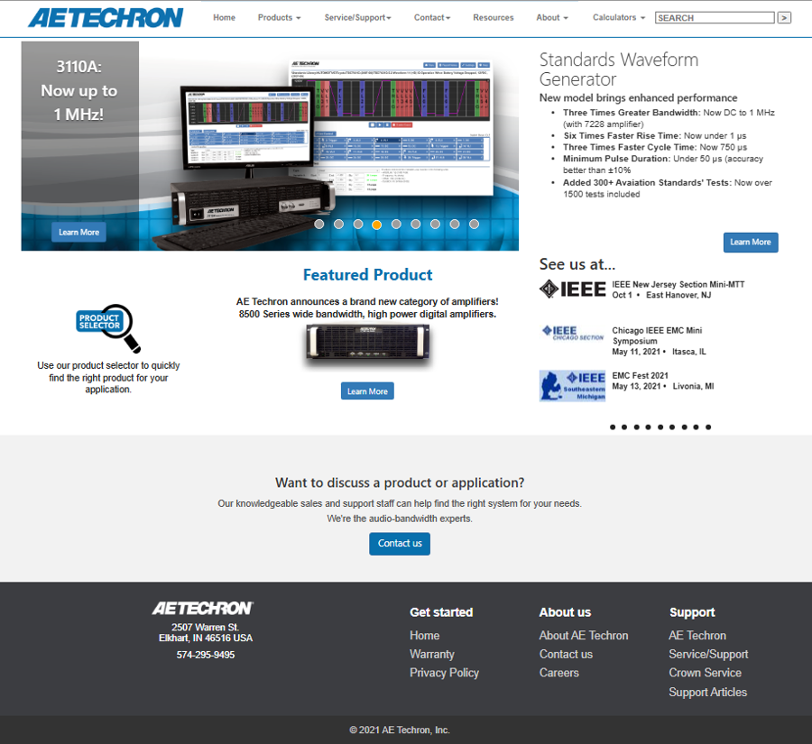
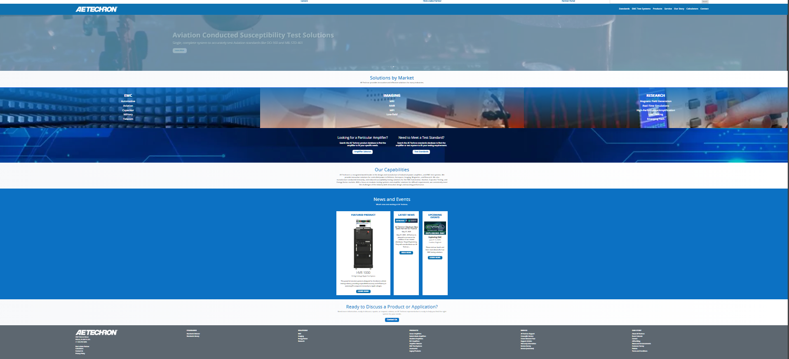

Expert Direction; Exceptional Results
A three-phase transformation from legacy HTML to responsive Bootstrap, and finally to a modern WordPress platform.
Maintained and regularly updated AE Techron's original static HTML/CSS website. Pages were hardcoded, non-responsive, and difficult to scale. Most revisions were hand-coded using simple layout techniques and inline styles. I managed content accuracy, visual layout, and SEO basics.
Led a full redesign using Bootstrap 3 to improve responsiveness, layout consistency, and future flexibility. I created mobile-first templates, restructured navigation, rebuilt carousels, and migrated CSS in stages to avoid downtime. This transition significantly modernized AE Techron's web presence.
Assisted the development team in converting the site to WordPress. I provided context, structure, and content support — including asset migration, layout recommendations, and refinements to content flow. While I didn’t lead this phase, my input helped shape continuity and maintain usability.
Here's a link to the complete AE Techron Wordpress website in its current state:
Current AE Techron WebsiteLet’s talk through it. Sometimes the hardest part is just getting started.
Let's Discuss It